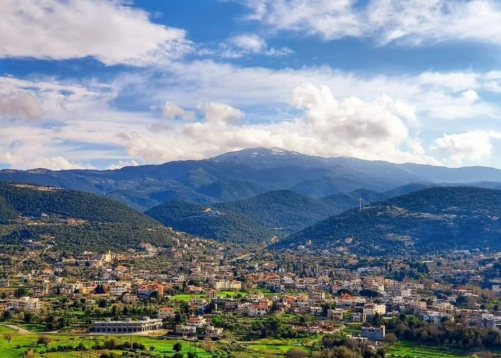

Al Qoubaiyat, also spelled Kobayat or Qoubayat, is the largest village in the Akkar Governorate in northern Lebanon. The village is located 140 km from Beirut, in the mountains, and covers around 70 square kilometers. It has a mild climate in summer and snowy winters, which makes it popular for hiking, skiing, and other outdoor activities. The name “Qoubaiyat” comes from the Aramaic word “Qbayyat,” meaning “big pools of water,” because the area has many natural springs. The village has a long history, with evidence of people living there as far back as 3000 BC. Ancient ruins from the Phoenician, Greek, and Roman times can still be found, including temples, tombs, and old coins.
Facts about Kobayat